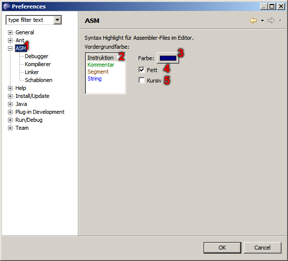

ASM Plug-In - General-Preferences
In this dialog this becomes syntax highlight defined. This then applies to all assembler files.

- Selection for general preferences.
- List of the different text areas.
- Color-attribute for seleceted text area.
- Bold-attribute for seleceted text area.
- Italic-attribute for seleceted text area.